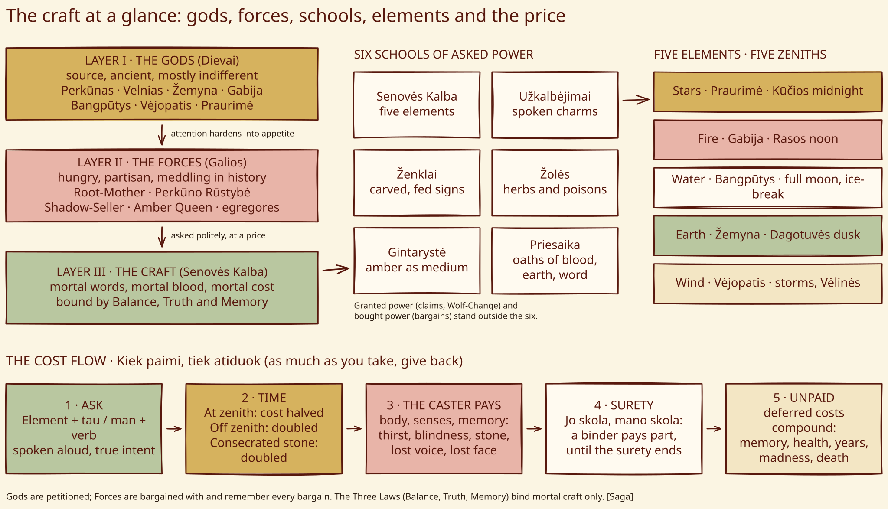

Senovės Kalba¶
The craft at a glance¶


The craft at a glance¶
The full compendium is in Lore of the Craft.*
Senovės Kalba

Senovės Kalba · school¶
Type |
school |
Family |
asked |
Note |
Senovės Kalba: the Ancient Speech, spoken working bound by the Three Laws. |
What it is¶
The Ancient Tongue: asked power, the mortal craft of petitioning the gods (and, riskier, the Forces) through five elements. It is the rarest and strongest school, and the only one that reaches across distance (through amber). Bound by the Three Laws: Balance, Truth, Memory. Full rules: Magic rules.
Who can use it (path & tier)¶
Three paths: born (prigimtis, usually down the maternal line, as the Palanga priestesses), noticed (pažymėtas, after a great deed) or bound (surištas, into another’s Sutartis: Vytautas’s path). Tier 3 (žynys, vaidilutė) casts one or two elements; tier 4 (Krivis, amber priestess) all five; Vytautas is “bound tier 2”. The baptised can use it.
How it works (medium, words, timing)¶
A line of Old Lithuanian naming an element, a recipient and a verb of giving (Ugnis tau degs). Tau is cast on another, man on oneself, at lighter cost. It needs a sacred medium, the words aloud (a whisper will do; the Order gags captured žyniai) and true intent. Each element’s zenith halves the cost; off it, the cost doubles.
Costs¶
Every working shows its bill (elements). The Five-Voice (Penkių Balsų Šauksmas) calls a little of every boon and costs a little of every price, permanently: dimmer sight and hearing, frayed memory (Book I ch. 15). A surety pays part of another’s prices (Birutė, until ch. 27).
Limits & counters¶
No illusions, no raising the dead, no creating love, no changing the past, no winning wars; at most a castle for a night. Consecrated stone doubles the cost; the Iron Saint’s knights are fearless; the White Silence smothers Wind; the Order’s sword dampens it. It fails against one who knows their true name better than you do.
Folk basis [Historical record]¶
A saga system (Book I ch. 31, appendix) built on real folk practice (charms, oaths, sacred fires, herbs, amber), with god-names from Baltic sources of uneven reliability: Praurimė, Bangpūtys and Vėjopatis are late or doubtful. No Baltic source describes a five-element craft.
Notable practitioners¶
Birutė (tier 4: the Praurimė vision, ch. 3; the Krėva fog, ch. 14; the sacrifice, ch. 27), the Krivis (4), Eglė (3), Vytautas (the Five-Voice, ch. 15; Book II ch. 2, 11, 27).
Relations
Bound by: Gintarystė (amber-craft) — Amber is the universal medium for Kalba.
Countered by: Kryžiaus kalavijas (the Order’s sword) (1383–1384)
Practitioners: Birutė (…–1384) — tier 4 · Eglė (vaidilutė → Pelkių Eglė) — tier 3 · Krivis of Šventaragis (…–1387) — tier 4 · Vytautas (1382–…) — tier 2 — Bound tier-2: Five-Voice and the pebble only.
Uses element: Ugnis (Fire) · Vanduo (Water) · Vėjas (Wind) · Žemė (Earth) · Žvaigždės (Stars)
- School
- Asked power. The rarest and strongest school, and the only one that reaches across distance (through amber)
- Tier
- Tier 2 minor workings in one element; tier 3 one or two elements; tier 4 all five. Vytautas is bound tier 2 (the Five-Voice and the pebble only)
- Casting
- One line in Old Lithuanian naming an element, a recipient and a verb of giving. Tau is cast on another, man on oneself at lighter cost
- Components
- A sacred medium, the words aloud (a whisper will do), and true intent. Paths: born (prigimtis), noticed (pažymėtas), bound (surištas)
- Cost
- Every working shows its bill: blindness, exhaustion or soul-chill, the patient's wound, petrification, loss of voice. A surety pays part of another's price
- Duration
- A candle's length for a minor working, a night for a major one. Hard ceiling: a castle, a night
- Limits
- No illusions, no raising the dead, no creating love, no changing the past, no winning a war. Fails against one who knows your true name better than you
- Counters
- Consecrated stone (the cost doubles, amber goes cold); the Iron Saint's fearlessness; the White Silence (smothers Wind, freezes Water); the Order's sword; a gag
Five elements. Clear Sight (Stars), Soul Armour (Fire), Life Spring (Water), Unmovable Will (Earth), Shadow Speed (Wind). Each has its god, medium and zenith.
The baptised. They can still use it. The gods do not care about creed, they care about truth.
The Five-Voice. Speaking all five lines together calls a little of every boon at once. The cost is a little of every price, permanent and cumulative: dimmer sight and hearing, frayed memory. The only permanent cost a minor working can carry.
Zenith. At its element's zenith the cost is halved. Off it, doubled. Some are impossible.
The Three Laws. Balance (Kiek paimi, tiek atiduok), Truth (no glamours), Memory (the land remembers every working).
Unpaid debts. A cost can be deferred, never refused, and deferred costs compound: memory first, then health, years of life, madness, death.
Connections¶
graph LR
birute["Birutė"]
egle["Eglė (vaidilutė → Pelkių Eglė)"]
el_earth["Žemė (Earth)"]
el_fire["Ugnis (Fire)"]
el_stars["Žvaigždės (Stars)"]
el_water["Vanduo (Water)"]
el_wind["Vėjas (Wind)"]
gintaryste["Gintarystė (amber-craft)"]
kalba["Senovės Kalba"]
krivis["Krivis of Šventaragis"]
order_sword["Kryžiaus kalavijas (the Order's sword)"]
vytautas["Vytautas"]
kalba -->|Uses element| el_stars
kalba -->|Uses element| el_fire
kalba -->|Uses element| el_water
kalba -->|Uses element| el_earth
kalba -->|Uses element| el_wind
gintaryste -->|Binds| kalba
order_sword -->|Counters| kalba
birute -->|Practises| kalba
krivis -->|Practises| kalba
egle -->|Practises| kalba
vytautas -->|Practises| kalba
style kalba stroke-width:3px